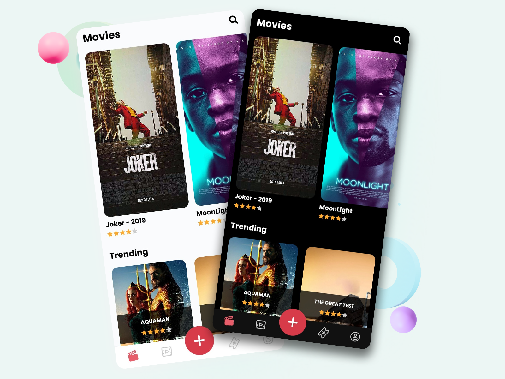
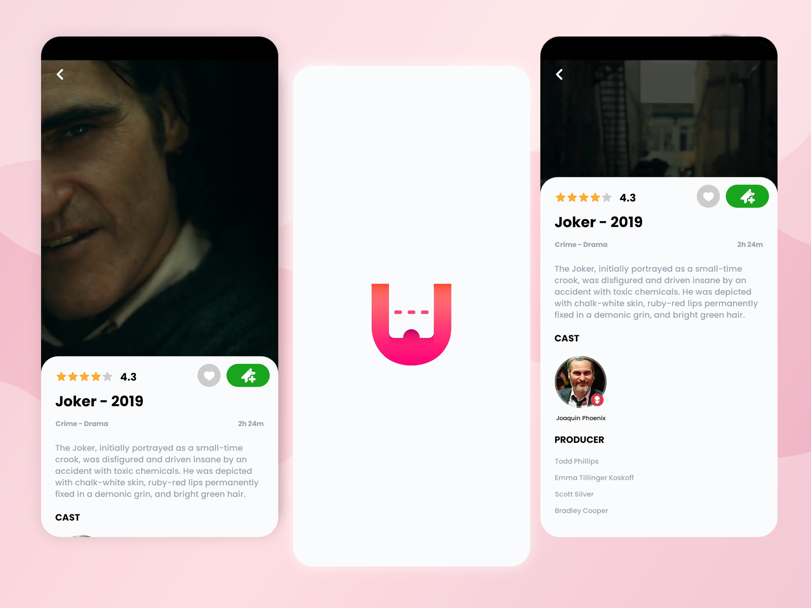
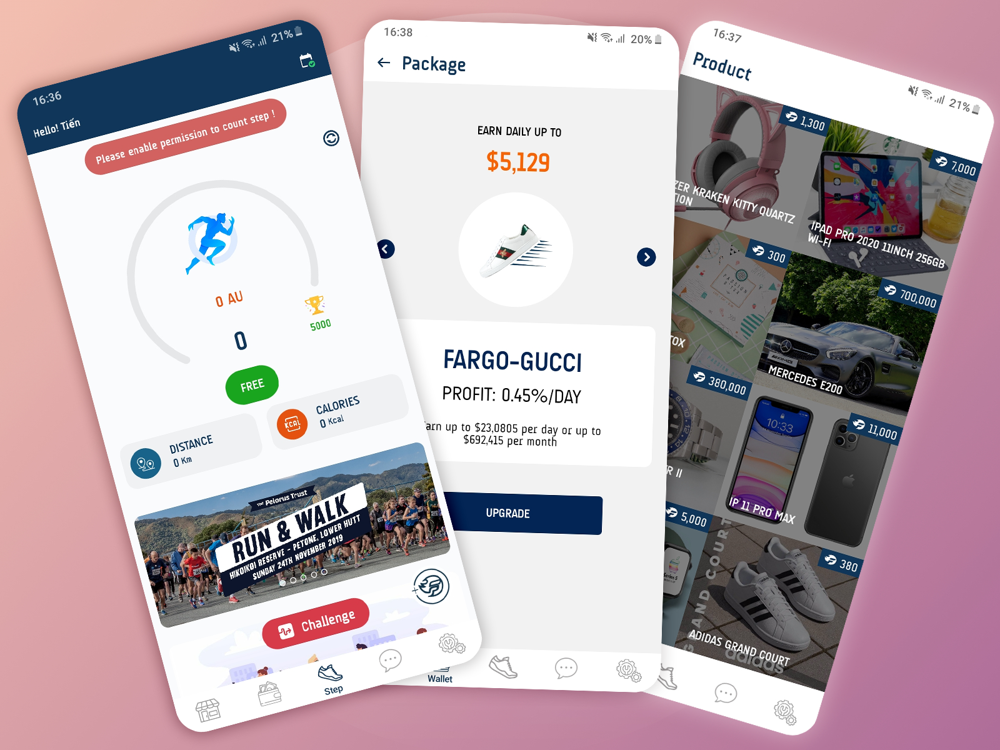

Introduce
I'm Thuan Vo, a Web Front-End Developer
A guy who loves designing frontend, writing and love cats
My zodiac is the Scorpio
I like time travel stories, which make me curious about how this universe works
Project
Ticketify là dự án demo về ý tưởng một ứng dụng đặt vé xem phim cho các phòng vé và các cụm rạp theo khu vực trong toàn quốc cho khách hàng. Khách hàng có thể xem trailer, xem thông tin, đặt vé cho bộ phim mình muốn xem và thanh toán trực tuyến thông qua thẻ ngân hàng được liên kết hoặc các ví điện tử như Momo, Airpay, ... Ngoài ra nó còn cung cấp một số tính năng chuyên nghiệp như : chọn chỗ ngồi, booking thức ăn, quản lí vé đã mua, đặt trước vé cho các bộ phim chưa khởi chiếu.
 FargoAu là một ứng dụng đếm bước chân người sử dụng khi họ di chuyển và tập luyện thể thao. Số bước chân có thể dùng để quy đổi sang AU khi hoàn thành các thử thách mỗi ngày và thử thách nhóm. AU có thể dùng để quy đổi sang các phần thưởng hoặc tích luỹ để tham gia vào hệ sinh thái tiền điện tử Fargo. Người dùng có thể quản lí số bước chân mỗi ngày, quản lí ví thưởng, nâng cấp gói package để hưởng nhiều phần thưởng lợi ích hơn, ...
Hiện tại đã có thể tải xuống ứng dụng từ cửa hàng GooglePlay và Apple Store
The jars contain happiness
Tấm poster viết, "Hạnh phúc! Đựng trong hũ thuỷ tinh! Gọi ngay!" và bên dưới dòng chữ là một số điện thoại.
Tôi đang đi bộ về nhà sau một ngày làm việc dài mệt nhoài thì liếc thấy tờ giấy gắn trên cái cột điện thoại cũ. Tôi chụp một tấm hình vì cho rằng chuyện này khá thú vị.
Tôi định cho vợ xem khi về tới nhà, nhưng do phải làm vài việc vặt nên tôi quên khuấy đi mất - bữa tối, rửa chén, giặt đồ, gói đồ ăn nhẹ cho con gái, đưa con bé đi ngủ, rồi cất đồ chơi của nó bên ngoài phòng khách - tối nào cũng là một quy trình chính xác như vậy.
Ngày hôm sau tôi thức dậy nằm quay lưng với vợ. Tôi luôn phải dậy sớm hơn cô ấy vì công việc của mình, vậy nên tôi khẽ khàng bắt đầu ngày mới và đi thẳng ra cửa.
Tại chỗ làm, tôi đang cập nhật báo cáo chi phí mới nhất của công ty. Hầu như ngày nào cũng vậy. Về cơ bản là họ trả tôi tiền để nhìn chằm chằm vào máy tính 9h một ngày và nhập số liệu lên trên các bảng tính. Tôi hoàn thành công việc khá nhanh vậy nên tôi quyết định sẽ rời văn phòng sớm - hôm nay là thứ sáu, và rất nhiều người cũng tan làm sớm vào cuối tuần.
Trên đường về nhà tôi nghĩ xem cuộc đời mình đã trở thành cái gì. Tôi đã luôn mơ mộng về những chuyến đi khi còn trẻ. Tôi muốn lái xe đi dọc đất nước hoặc du lịch bụi quanh châu Âu. Rồi tôi đã gặp Kelsey. Tôi đã yêu Kelsey. Khi bạn gặp ai đó và rơi vào một mối quan hệ, dù muốn dù không, thì một phần kế hoạch cuộc sống cá nhân của bạn cũng sẽ bị ngưng lại. Và sau đó mối quan hệ chuyển qua hôn nhân, và sau đó bạn có con, và sau đó bạn phải đăng ký cho con đi học mẫu giáo, và sau đó bạn phải có công việc lương cao hơn và làm việc thêm nhiều hơn, v..v...
Tôi cố gắng không để cho bản thân mình tiếc nuối. Tôi đang chỉ nói rằng tôi không hoàn toàn vừa lòng với vị trí của mình trong cuộc đời. Tôi không thấy bản thân mình là một người hạnh phúc.
Tôi vẫn đi trên quãng đường quen thuộc về nhà như mọi ngày, tôi lại bước qua tấm poster hôm qua. Tôi không biết tại sao, tôi thực sự không biết, nhưng tôi quyết định gọi tới số máy đó. Tôi cho rằng đó là một trò đùa. Có lẽ sẽ có ai đó nhấc máy và nói "Tôi yêu bạn!". Hoặc có lẽ là một số máy kết nối tới công ty quảng cáo vớ vẩn nào đó. Tôi chẳng biết phải trông đợi gì.
Tôi gọi. Chuông reo một lần trước khi có người nhấc máy.
"Alo?" một phụ nữ nói.
"Xin chào... ừm... tôi gọi về tấm poster? Quảng cáo của bạn?"
"Tuyệt vời," cô ta nói một cách điềm đạm, "Khi nào anh muốn lấy nó?"
"Lấy cái gì cơ?"
"Cái hũ..." cô ta nói, như thể đó là một chuyện hiển nhiên.
"Ồ, vâng, tất nhiên..." rồi tôi nhận ra mình đã đi làm sớm mà không nói với Kelsey, vậy nên tôi có thể đi lấy ngay bây giờ.
"Chính xác thì nó là gì? Thứ bạn bán ấy?"
"Tôi đã nói rồi đó thôi. Đó là hạnh phúc chứa trong một hũ thuỷ tinh. Như trên poster có nói. Hạnh phúc bảo quản tốt nhất là trong hũ thuỷ tinh.."
"Ừm được rồi. Chúng ta nên gặp nhau đâu đó phải không?"
"Chắc chắn rồi, nên gặp nhau nơi nào công cộng đi."
Nơi công cộng chúng tôi gặp nhau là bãi đậu xe Starbucks cách chỗ tôi khoảng 1 dặm.
Giờ tôi không nghĩ rằng tôi thực sự sắp mua một hũ hạnh phúc hoặc cái gì đó. Tôi chắc đến 90% cô ta sẽ bán thuốc phiện cho tôi. Có thể là heroine trong hũ. Tôi nhớ ra, ôi không, 'hạnh phúc' có thể là tên gọi khác của một loại thuốc phiện nào đó và tôi đang đi gặp một người bán thuốc. Nếu cô ta là cớm thì sao? Tôi có bị bắt không? Nhưng có thứ gì đó bên trong thôi thúc, tôi tự nhủ rằng cứ bước tiếp, thế nên tôi đã làm theo.
Tôi đứng bên ngoài và nhắn tin cho cô ta.
Tôi: Tôi tới rồi.
Cô ấy: Yay ! Tôi tới liền đây.
Tôi: Cô lái xe gì vậy?
Cô ấy: Camry bạc.
Khi tin nhắn cuối cùng của cô ấy tới thì tôi thấy xe cô tấp vào. Cô ấy đỗ không xa nơi tôi đứng lắm. Chẳng có ai trên xe ngoài cô ta cả vậy nên nỗi sợ hãi bị bắt cóc đã được trút bỏ. Cô ấy mở cửa và đứng xuống vỉa hè, nhìn quanh cho tới khi chạm mắt tôi. Tôi khẽ gật đầu báo hiệu. Cô ấy đơn giản vẫy tay ra dấu cho tôi tiến lại gần, và tôi đã làm theo.
Cô ấy còn trẻ, có lẽ khoảng 25, với mái tóc vàng óng lượn sóng. Làn da nhợt nhạt đối lập hẳn với bộ đồ màu đen cô ấy đang mặc.
"Ngày thật tuyệt để ra ngoài nhỉ ?" - cô ấy nói thay lời chào. "Anh là người đã gọi về cái hũ phải không?"
"Vâng, chính là tôi đây!"
"Tuyệt, well, của anh đây!"
Cô ấy trao cho tôi một hũ thuỷ tinh bé xíu có nắp đậy không cao quá vài cm. Bên trong đó là một ánh sáng. Không phải là bóng đèn - chỉ là ánh sáng thôi. Giống như ai đó đã đóng ánh sáng mặt trời vào hũ vậy. Nó lấp lánh ngay dưới ánh sáng buổi chiều. Giống như một mặt trời tí xíu, hoặc một vũ trụ tí xíu tồn tại trong một căn nhà bé nhỏ với những bức tường pha lê. Tôi nhìn ngắm nó say sưa thích thú chẳng giấu đi nỗi kính phục trên gương mặt.
"Ánh sáng khá đẹp phải không?"
"Cái... cái gì đây?"
Anh đã hỏi câu này ba lần rồi. Câu trả lời của tôi vẫn vậy. Đó là hạnh phúc. Hạnh phúc trong hũ thuỷ tinh."
"Tôi phải làm gì với nó đây?"
"Giữ nó," cô ấy nói giản đơn, "nếu có vấn đề gì thì nhắn tin cho tôi."
Cô ta chuẩn bị lên xe.
"Đợi đã!" Tôi nói, "tôi nghĩ cô bán thứ này mà? Bao nhiêu vậy?"
"Đừng lo anh bạn," cô ấy mỉm cười, "anh sẽ trả thôi."
Cô đóng cửa xe và tôi bước sang một bên khi cô lùi xe rồi lái đi mất. Chuyện quái gì vừa xảy ra vậy? Tôi đang giữ thứ gì đây? Tôi nhìn xuống cái hũ một lần nữa. Ánh hào quang rực rỡ thật mê hoặc. Tôi đặt nó vào túi và tôi có thể thấy nó khẽ ánh lên xuyên qua túi quần tôi. Tôi bước về nhà.
Một ngày nắng ráo tuyệt đẹp nhanh chóng chuyển mưa với toàn mây mù trên trời. Dự báo thời tiết không nói trời sẽ mưa, nếu không tôi đã bắt xe bus hoặc tàu điện ngầm đi làm rồi. Tôi rảo bước về nhà, cố gắng để không bị ướt sũng. Cuối cùng tôi cũng tìm thấy một chỗ trú khi chạy tới căn hộ nhà mình.
Tôi bước tới cửa và nhận ra chìa khoá đã rơi mất. Mẹ kiếp, không thể tin được là mình lại làm mất nó, tôi nghĩ.
Tôi gõ cửa và nói to "Hey, vợ ơi anh đây, anh không biết đã để chìa khoá đâu rồi." Tôi nghe tiếng cửa mở từ bên trong.
Khi cánh cửa mở ra tôi được chào đón bởi một người đàn ông to lớn với mái tóc bóng nhờn và chòm râu bù xù, ông ta nói, "tôi nghĩ anh bạn đã đi nhầm nhà rồi."
"Ôi," tôi nói hoàn toàn mất phương hướng, "tôi xin lỗi. Chúc anh buổi tối vui vẻ."
Anh ta khúc khích cười và đóng cửa.
Căn hộ số 33.
Tôi biết đó là căn hộ của tôi. Tôi biết mà. Tôi đã ở trong căn hộ 33 năm năm nay. Nhưng đó không phải là căn hộ của tôi. Từ những gì tôi có thể thấy bên trong, tất cả đồ nội thất đều khác biệt, nó được sơn màu khác, tất cả đều không đúng. Tôi cảm thấy như tôi đã đánh vào đầu mình và bị chuốc thuốc mê. Trong khoảnh khắc đó, không có gì có nghĩa nữa.
Tôi rút điện thoại ra gọi cho Kelsey để cô ấy có thể trấn tĩnh tôi và nói với tôi rằng tôi chỉ bối rối trong một giây. Nhưng số vợ tôi không có trong điện thoại của tôi. Thực tế là, không có gì trong điện thoại của tôi cả. Tôi không có tin nhắn với cô ấy. Không có lịch sử cuộc gọi. Không có hình ảnh. Giống như điện thoại của tôi đã thiết lập lại cài đặt gốc. Có phải cô gái đó bằng cách nào đó đã tráo điện thoại của tôi khi tôi không để ý? Tôi sẽ tự bấm số Kelsey, nhưng tôi không thể nhớ ra được. Tôi đã luôn thuộc lòng số điện thoại đó nhưng giờ thì không còn nữa. Tôi cần phải quay lại văn phòng, tôi đã sao lưu tất cả danh bạ trên máy tính làm việc của mình.
Vì trời vẫn còn mưa, nên tôi nhảy lên chiếc xe buýt dừng ngay trước khu chung cư. Tôi hướng về phía văn phòng, dành toàn bộ thời gian nhìn chằm chằm vào đôi giày ướt của mình, tự hỏi chuyện quái gì đang xảy ra.
Chúng tôi có thẻ ra vào tòa nhà để chỉ những người có thẩm quyền mới có thể vào bên trong. Tôi luôn giữ thẻ ra vào của mình trong ví của mình, luôn luôn là vậy. Nhưng thật bất ngờ, thật bất ngờ - nó không còn ở đó. Tôi liên lạc qua hệ thống loa mà chúng tôi dành cho khách có các cuộc hẹn hoặc nhân viên để dự phòng trong trường hợp ai đó bị mất hoặc quên thẻ.
BZZZ
"Tôi là Tim, tôi hẳn đã mất thẻ. Số nhân viên của tôi là..." tôi dừng lại khi trong đầu trống không.
Một giọng nói phát ra qua loa, "Tim? * Số nhân viên của anh là gì?"
"Ừm, tôi không thể nhớ, tôi..."
"Được rồi, chỉ cần cho tôi biết tên đầy đủ và bộ phận làm việc của bạn"
"Ừ, tài chính. Tôi là người nhân viên tài chính. Tên đầy đủ của tôi là Tim Brooks."
"Đợi chút."
Khoảng ba mươi giây sau, người đàn ông lại nói với tôi.
"Chúng tôi không có ai là Tim Brooks làm việc trong tòa nhà này. Anh có hẹn với ai đó chưa?"
Tôi ngạc nhiên lùi lại, gần như vấp ngã trên đôi chân của chính mình. Tôi mới đến văn phòng đó một hoặc hai giờ trước. Điều gì đã xảy ra với tôi ? . Tôi nhìn chằm chằm vào tay mình, không chắc mình có đang ở đúng cơ thể không. Tôi cảm thấy như thế giới xung quanh đang tan rã. Tôi không kiểm soát được, tôi chỉ đơn thuần đang ở trong đầu người khác, nhìn thế giới qua đôi mắt của họ.
Ngay sau đó, tôi nhận được một tin nhắn. Tôi nhận ra số điện thoại ngay lập tức, đó là cô gái lúc nãy. Người đã cho tôi cái hũ. Tôi đã quên tất cả về nó cho đến khi tôi nhìn thấy tin nhắn của cô ấy.
Cô ấy: Này. Thế nào rồi?
Tôi nhìn vào điện thoại của mình, chết lặng. Tôi tức điên lên vì cô ấy rất thờ ơ về việc này. Cô ta biết chuyện gì đang xảy ra. Cô ta đã làm điều này bằng cách nào đó.
Tôi: Cô đã làm cái quái gì với tôi?!
Cô ta: Điều tồi tệ nhất vẫn chưa đến.
Tôi đã suýt ném điện thoại xa hết mức có thể trong sự tức giận. Tôi lấy cái hũ ra khỏi túi. Trông nó không thay đổi gì cả, vẫn phát sáng như vậy.
"Mày đã làm cái đéo gì vậy!" Tôi hét với cái hũ.
Khi tôi nhìn chằm chằm lớp thuỷ tinh lấp lánh của nó, tôi nhận ra một điều. Tôi không biết vợ tôi trông như thế nào nữa. Tôi biết tên cô ấy. Tôi biết nó bắt đầu bằng chữ K, hoặc có thể là chữ C. Tôi không thể hình dung cô ấy trong đầu. Tôi biết mình đã có vợ. Tôi biết chắc là như vậy. Phải, vì tôi đã có một cô con gái. Tôi đã có vợ và một cô con gái. Tôi chỉ, không thể nhớ được khuôn mặt của họ sau đó là tên của họ, hay ngày sinh nhật của họ, hoặc bất kỳ ký ức nào tôi có với họ.
Tôi biết là họ tồn tại. Họ đã tồn tại. Tôi vừa mới nhìn thấy họ vào buổi sáng, phải không? Tôi không thể nhớ được cô ấy trông như thế nào ?. Ngày đầu tiên của chúng tôi là gì? Chúng tôi đã có một đám cưới, phải không? Nụ hôn đầu tiên của chúng ta thì sao? Con gái tôi hay đó là con trai tôi? Có lẽ tôi đã chưa có con. Nhưng vợ tôi, hoặc bạn gái, cô ấy là có thật. Tôi biết mà. Ý nghĩ đang xé toạc tôi ra. Tôi không thể nhìn thấy cô ấy trong đầu. Tôi không thể nhớ lại một chuyện gì về cô ấy.
Tôi đang đứng bên ngoài vẫn tòa nhà đó, nhưng tôi không chắc tại sao mình lại như vậy. Tôi đã làm việc ở đó? Tôi phải làm việc ở đâu đó. Mưa kèm theo một cơn gió lạnh buốt. Nó đang quất vào mặt tôi, làm mũi và má tôi đau nhói. Tôi muốn về nhà, tôi muốn ở bên cô ấy. Tôi muốn được ấm áp. Tôi muốn có một công việc văn phòng tồi tệ mà giữ một mái nhà trên đầu của tôi. Tôi muốn tất cả. Tôi ướt sũng. Tôi đã khốn khổ. Tôi không thể nhớ cha mẹ, hoặc thời thơ ấu của tôi. Tôi thậm chí có bạn bè không? Tại sao tôi lại đứng trong mưa?
Tôi nhìn xuống tay mình. Tôi vẫn đang nắm chặt cái hũ. Ký ức duy nhất trong cả cuộc đời tôi có thể nhớ một cách cụ thể là cô gái đó đưa nó cho tôi. Nói với tôi đó là hạnh phúc. Nó không mang lại hạnh phúc. Nó mang lại nỗi đau. Nó mang lại khốn khổ. Tôi đau khổ hơn hơn bao giờ hết. Điện thoại của tôi rung lên:
"Đập cái lọ đi Tim." - Tin nhắn hiện lên màn hình từ số cô gái ấy
Tôi nhìn vào bàn tay còn lại của mình. Trong ánh sáng của mặt trời lặn và bầu trời mưa, chiếc bình phát sáng rực rỡ hơn bất kỳ ánh đèn đường nào gần tôi. Tôi đã không phá vỡ nó bởi vì muốn làm theo hướng dẫn của cô ấy. Tôi đã phá vỡ nó vì tôi tức giận. Tôi đã phá vỡ nó vì tôi buồn. Tôi cần giải toả. Tôi giơ cánh tay lên trên đầu và đưa nó xuống với một động tác thật nhanh, đập vỡ cái lọ trên nền bê tông dưới chân tôi.
Không khí tối tăm, lạnh lẽo đó kèm theo cơn mưa lan tỏa như thể đó là sóng xung kích của một quả bom phát nổ, và tôi đang ở tâm chấn. Tôi thấy ánh sáng vàng ấm áp từ bên trong cái bình lan nhanh trên mặt đất và bay lên trời. Tôi đã bị nhấn chìm trong đó. Tôi không còn có thể nhìn thấy đường phố hay mưa, hay bất cứ điều gì tối tăm. Tôi cảm thấy như mình đang lao thẳng vào một ngôi sao đang đi nhanh hơn tốc độ ánh sáng. Cảm giác như đang ngồi trước đống lửa trong một đêm mùa đông lạnh lẽo, nhưng hơi ấm đó bao trùm lên từng cm trên cơ thể.
Và rồi tôi chớp mắt.
Ngay lập tức tôi có thể cảm nhận được những tấm ga giường bên dưới mình, và lưng tôi khẽ chạm vào vợ tôi. Tôi đang nhìn ra ngoài cửa sổ. Ánh sáng ban mai len lỏi qua tấm kính và lấp lánh trên khuôn mặt tôi.
Tôi đứng dậy từ giường và lấy điện thoại của mình. Đó là buổi sáng thứ sáu. Tôi đã nhận một tin nhắn:
Hãy cho tôi biết nếu anh cần một hũ khác
Tôi gọi báo nghỉ ốm. Tôi lẻn vào phòng con gái mình và chào con bé bằng một nụ hôn và nói với nó rằng hôm nay sẽ không phải đi học mẫu giáo. Chúng tôi sẽ có một ngày gia đình. Con bé mỉm cười và vươn tay với một cái ngáp trước khi cuộn tròn và ngủ thiếp đi.
Tôi trở lại giường và siết chặt vợ. Tôi đã không buông tay trong nhiều giờ. Con gái của chúng tôi vào phòng và đánh thức chúng tôi dậy, cuối cùng nó nhảy lên giường và hét lên để chúng tôi thức dậy. Hôm qua tôi có thể thấy khó chịu. Hôm qua tôi có thể đã tìm thấy rất nhiều điều gây phiền nhiễu, đơn điệu, hoặc buồn tẻ.
Nhưng không phải hôm nay. Hôm nay, tôi kéo con bé xuống dưới lớp chăn giữa tôi và Kelsey.
Hôm nay sẽ là một ngày tốt lành. Hôm nay, tôi rất hạnh phúc.
Đừng bao giờ nhìn lên mặt trăng !
Ông tôi là một phi công chiến đấu. Dù ông luôn giữ khoảng cách, tôi vẫn thật sự quý ông. Nghề nghiệp của ông tôi có lẽ là lý do lớn nhất cho tình yêu của tôi với bầu trời, vũ trụ. Chúng tôi thường nói về những điều ấy mỗi khi gặp nhau. Trong một lần tôi hỏi ông, liệu ông có biết ai đã từng đặt chân lên Mặt Trăng, ông chỉ đáp:
“Đừng bao giờ hỏi ông về Mặt Trăng. Nơi đó quá đen tối và xấu xa.”
Ông mất năm 2004, vì những lý do tự nhiên.
Khoảng 2 tháng trước, chúng tôi quyết định cải tạo lại căn nhà cũ của ông. Khi đang dọn dẹp tầng gác mái, tôi tìm thấy một chiếc hộp kim loại đã sờn mép. Trong đó là một số thứ, có lẽ là những vật xưa của ông tôi. Một huy hiệu quân đội, một chồng giấy và cả một bức ảnh cũ của ông tôi cùng hai người nữa mà tôi không nhận ra. Ông tôi trông có vẻ tầm 40 tuổi, nên có lẽ tấm ảnh chụp trong những năm 70. Cả 3 người đều đang mặc đồ phi hành gia, đứng trước một tấm màn căng NASA vẫn thường dùng, nhưng không có logo. Cái nền chỉ độc một màu sắc, trống rỗng. Huy hiệu của nhiệm vụ mang tên Dawnbreaker. Tôi không hiểu nổi. Ông tôi là phi hành gia ư? Tại sao ông không nói với ai về chuyện này? Dawnbreaker? Tôi chưa từng nghe thấy tên nhiệm vụ này. Có lẽ người ta đã rất phí sức để lấp liếm vụ này. Nhưng tại sao?
Câu trả lời nằm ở những giấy tờ nằm đáy hòm. Tôi sẽ ghi lại phần nội dung phía dưới, nhưng hãy biết trước rằng nó không đẹp đẽ gì đâu.
_______________________________________
Gửi gia đình tôi,
Nếu mọi người tìm thấy những thứ này, tôi cần thú nhận một điều. Đáng lẽ tôi không được tiết lộ với ai, nhưng nếu mọi người tìm thấy thứ này, có lẽ mọi chuyện cũng chẳng quan trọng nữa. Năm 1965, tôi và một vài những phi công khác được chọn lựa cho một đội phi hành gia bí mật, những người sẽ tham gia trong một nhiệm vụ ngoài vũ trụ được chính phủ che đậy. Chúng tôi không có được thanh danh và danh tiếng như những phi hành gia bình thường, nhưng tổ quốc cần chúng tôi, nên chúng tôi đều sẵn sàng.
Đầu năm 1972, họ thông báo với chúng tôi rằng trong một khoảng thời gian vô định, chính phủ đã phóng một vệ tinh bí mật bay quanh Mặt Trăng. Họ không nói nhiệm vụ của nó, hay lý do của nó, mà chỉ rằng vài tuần trước nó đã rơi xuống phần tối của Mặt Trăng, và rằng những dữ liệu trong đó là trọng yếu. Chính phủ cần lấy lại nó, vì vậy đã cử tôi cùng 2 phi hành gia khác đến lấy bộ nhớ của vệ tinh. Những dụng cụ của nhiệm vụ Apollo 18 đã được chuyển hết sang chỗ chúng tôi. Từ những gì chúng tôi biết, cả đội Apollo đều nổi khùng lên. Mà cũng phải thôi. Có vẻ như những người sếp của chúng tôi quyền lực hơn NASA nhiều. Tất nhiên, toàn bộ nhiệm vụ là bí mật tuyệt đối.
Trên giấy tờ, tôi được dàn quân sang Mặt Trăng, nhưng trong thực tế chúng tôi đã trải qua một đợt rèn luyện toàn tập cho nhiệm vụ. Sau vài tháng, chúng tôi cùng đứng trên bệ phóng, trước mặt là cái tên lửa kếch xù, chính là thứ sẽ đưa chúng tôi lên Mặt Trăng. Tôi là chỉ huy nhiệm vụ, trung úy Carver là phi công của Mô-đun du hành Mặt Trăng (LEM) và trung úy Ackermann là phi công của Mô-đun Chỉ huy/Hỗ trợ(CSM).
Chuyến bay tới Mặt Trăng mất 103 ngày. Sau khi tới nơi, chúng tôi đi vài vòng quanh quỹ đạo. Mỗi lần chúng tôi bay phía sau đường chân trời do chính Mặt Trăng tạo ra, nỗi bơ vơ bất lực lại dâng lên trong lòng tôi một chút khi giao tiếp giữa chúng tôi và thế giới phụt tắt, tất cả là do khối đá và bụi hình cầu đã chặn phần tín hiệu mỏng manh. Phần tối của Mặt Trăng khác xa với phần sáng mà chúng tôi thấy gần như mỗi ngày. Thay cho những cánh đồng xám bằng phẳng và biển trăng yên tĩnh là một vùng đất bao trùm bởi bóng tối, những cái miệng núi lửa há to chực chờ và cả những hố sâu hun hút, như thể nó đang bị vũ trụ rộng lớn này gặm nhấm từng giờ từng phút. Cuối cùng chúng tôi cũng quyết định nơi hạ cánh. Tôi và Carver cùng chúc Ackermann may mắn và trong Mô-đun Mặt Trăng mang tên Charon, chúng tôi tách khỏi cái CSM Trinity.
Sau khi chúng tôi thông báo “Charon đã chạm đất”, lời đáp lại chẳng phải tiếng vỗ tay khích lệ hay chúc mừng, mà chỉ độc có “Đây là Trinity, chúc mừng Charon! Tôi sẽ nói lại với bên kia. Giữ an toàn nhé các anh bạn.”
Và cứ như thế, chúng tôi tách rời hoàn toàn với cả thế giới.
Ackermann là đường liên kết duy nhất. Khi anh đang phía trên phần sáng, anh có thể liên hệ với chỉ huy mặt đất, còn khi ở trong phần tối, anh có thể nói chuyện với chúng tôi. Không bao giờ có thể cả 2 cùng một lúc. Và cho dù quỹ đạo của CSM là khoảng 2 tiếng, chúng tôi chỉ có thể giữ liên hệ trong đúng 35 phút mỗi quỹ đạo.
Chúng tôi hạ cánh trên một chiếc máy bay dẹt trong một miệng núi lửa lớn. Khác với những gì người ta thường nghĩ, Mặt Trời cũng chiếu sáng phần tối của Mặt Trăng như phần sáng. Số lượng ánh sáng phụ thuộc vào từng giai đoạn mặt trăng.Nơi chúng tôi đáp cánh vẫn sáng như ban ngày, nhưng cả 2 đều biết ánh sáng chỉ kéo dài trong vài ngày. Tôi hào hứng nghĩ đến những điều đang đợi chúng tôi trong thế giới xa lạ này.
Chúng tôi đợi khoảng 1 tiếng rưỡi để nhận được hiệu lệnh từ Ackermann và dành thời gian chuẩn bị bộ đồ của mình.
“Chỉ huy gửi lời chúc mừng. Các anh hãy tiếp tục nhiệm vụ.”
Mọi thứ im lặng như tờ ngay khoảnh khắc tôi đặt chân lên bờ mặt Mặt Trăng. Tôi cố vắt óc nghĩ ra cái gì đó truyền cảm hứng để nói, nhưng đã qua thời đó rồi. Cùng với Carver, hai người tôi bắt đầu lắp chiếc xe rover và sau khi cắm ngọn cờ bên cạnh tàu, chúng tôi cùng lái đi. Trong chuyến đi xuyên hành tinh, khóe mắt tôi vô tình bắt gặp một ánh sáng lóe lên, như phản chiếu từ một tấm kim loại đặt dưới mặt trời phía xa xa. Cũng bởi việc này khá phổ biến – một hiện tượng vật lý khá thú vị sinh ra từ những bức xạ vũ trụ phản ứng với mắt người, tôi không để ý lắm và nhanh chóng gạt ra khỏi đầu.
Sau khi lái vòng quanh được vài tiếng, chúng tôi tìm được vệ tinh ấy – hoặc chí ít là những phần còn lại của nó. Lập tức, chúng tôi nhận ra điều không ổn. Có cả tá vết chân quanh máy dò, dẫn tới 2 vết đường kéo dài.
“Chuyện quái gì đây?!” Carver hỏi, sững sờ.
“Tôi không biết, nhưng có vẻ ai đó đã tới trước chúng ta rồi,” tôi đáp.
Cả con đường cả vết chân đều không phải của chúng tôi. Bất kể ai lấy dữ liệu ở đây đều không vì nước Mỹ. Như tôi dự kiến, hộp dữ liệu cũng biến mất rồi. Chúng tôi có tìm thấy bộ phận chứa nó, nhưng chỉ trống trơn. May sao, chúng tôi vừa liên lạc với Ackermann, nên chúng tôi kết nối lại, diễn tả những gì cả hai đã thấy.
“Việc này thật phi lý. Ai mà lại lấy chứ? Đám người Nga ư? Họ còn chẳng có chương trình mặt trăng nào! Kể cả nếu có người lấy thì chúng ta cũng phải biết chứ. Làm sao chúng hạ cánh trên Mặt Trăng mà chúng ta không biết được chứ?” anh đáp lại.
“Theo như chúng ta biết, thì người Nga không biết chúng ta ở đây đâu,” Carver nói qua radio.
“Chúng ta sẽ đi theo đường này” tôi chen ngang.
“Các anh chắc chứ?” Ackermann hỏi.
“Tất nhiên là không rồi. Chúng ta rõ ràng đã bỏ qua điều gì đó. Nhưng tôi sẽ nghe theo anh, chỉ huy,” Carver đáp.
“Ừ. Nếu chuyện xảy ra trong cái máy dò quan trọng đến mức để 2 nước điều người đến lấy lại, chúng ta phải tìm ra chuyện gì xảy ra với nó,” tôi trả lời.
“Rõ nhé, Charon. Tôi sẽ thông báo lại nơi hai anh đứng càng nhanh càng tốt. Cẩn thận đấy.”
Khí trong bình của chúng tôi đã cạn một nửa, nhưng chúng tôi tiếp tục di chuyển, mong chờ một câu trả lời cho bí ẩn này.
Không lâu sau, tôi thấy một thứ phía xa. Lúc chúng tôi tiến lại gần, tôi nhận ra đó là một con tàu, với thiết kế khác hoàn toàn với con tàu chúng tôi, trên thân là cờ của Xô Viết. Tôi không thể giải thích, nhưng con tàu này rất lạ. Nếu người Nga thật sự đang ở đây,họ sẽ đáp lại chúng tôi từ lâu rồi, nên chẳng có lý do gì để trốn cả.
“Gửi những người Xô Viết trên này, đây là đoàn Dawnbreaker, xin hãy trả lời. Chúng tôi biết các bạn đang ở đây, chúng tôi vừa nhìn thấy các bạn.”
Im lặng.
Chúng tôi thử liên lạc với họ thêm vài lần nữa, cả tiếng Anh lẫn tiếng Nga, nhưng chỉ toàn là im lặng. Chúng tôi đi lại gần và tôi nhận ra vì sao mình thấy con tàu này lạ. Có vẻ như nó ở trên này đã lâu. Khá là khó để nhìn quang cảnh bên trong tàu qua những ô cửa sổ đã bị che lấp.
“Khí trong bình chúng ta đang dần cạn và tôi không thích điều này đâu Miller. Chúng ta nên quay lại đi.” Carver lên tiếng, giọng đầy ngập những lo âu không giấu nổi.
“Tôi biết, nhưng ta cần hiểu chuyện quái gì đang xảy ra ở đây.”
Mất kha khá thời gian nhưng cuối cùng chúng tôi cũng tìm ra cách mở con tàu. Không ai ở nhà. Bên trong là một đống hỗn lộn, với những vệt nâu đỏ văng quật khắp nơi, có lẽ là từ đống đồ hộp đang mở nằm lăn lóc trên sàn. Hay là cái khác...? Không, tôi nhanh chóng gạt ý nghĩ này khỏi đầu.
Con tàu là tàu hai người lái. Có một vài đồ dự trữ và vật dụng, nhưng chẳng có hộp đen từ vệ tinh nào. Có một bộ đồ treo gần nút khóa khí. Hai người, và một bộ phi hành gia rõ ràng đã mất bảng tên. Chúng tôi nhanh chóng nhận ra bộ còn lại có lẽ đang ở đâu đó ngoài kia – cùng với người mặc. Lúc ấy phần khí đã xuống mức báo động, nên chúng tôi nhanh chóng quay lại tàu. Khi chúng tôi về tới Charon với những mẩu khí cuối cùng, tôi nhận ra một điều.
“Nói đi, Carver, là tôi tưởng tượng hay chúng ta không hề đi qua đống đổ nát của vệ tinh trên đường về thế?” tôi hỏi.
“Fuck. Đừng nhắc nữa. Nó không ở đó, đúng rồi.”
Chúng tôi chia sẻ khám phá kích thích này với Ackermann, và anh cũng ngạc nhiên như đài chỉ huy khi anh thông báo lại điều này. Đêm đó, tôi đứng canh trong 4 tiếng đầu. Cũng không hẳn là đêm, vì mặt trời vẫn chiếu sáng, nhưng vì lý do đánh dấu thời gian, chúng tôi vẫn đặt khoảng thời gian đi ngủ là buổi tối.
Khi đến phiên tôi đi ngủ, theo tôi vào giấc mơ chính là ánh sáng đã lóe lên mà tôi bắt gặp ngày hôm trước. Tôi cứ đi mãi, đi mãi, cho tới khi tôi tìm thấy bộ đồ phi hành trong con tàu người Nga nằm đó, trong đống bụi. Tay chân của bộ đồ xoắn quýt và dị dạng thật ghê tởm, nhưng khá rõ ràng là ai đó, hoặc cái gì đó đang ở trong bộ đồ. Tôi tiến tới, chầm chậm mở phần kính chắn nắng đã che khuất cái bên trong của mũ bảo hiểm. Mắt tôi trợn tròn sợ hãi khi đối diện với thứ bên trong. Đó là mặt tôi, đầy những vệt máu đã khô lại. Nơi hốc mắt chỉ còn hai lỗ đen như vô tận, sâu hun hút.
Ngày hôm sau chúng tôi bắt được tin hiệu gì đó trên một kênh trống trong chiếc radio. Một tín hiệu yếu ớt đến từ đâu đó trong miệng núi lửa. Chúng tôi cố dẫn nó tới loa, nhưng nó chỉ toàn là vô nghĩa, chỉ là một âm thanh lặp đi lặp lại mô phỏng tiếng một người phát âm một chữ hay âm đơn nhưng kéo dài tới 3 giây, sau đó là một quãng lặng 3 giây. Méo mó và rõ ràng không phải được lặp tự động, mỗi âm thanh chỉ lệch đôi chút với âm trước đó.
Sau bữa ăn, chúng tôi cùng chuẩn bị cho chuyến du hành tiếp. Hôm nay tối hơn mọi ngày. Mặt Trời vẫn tỏa sáng, nhưng nó đang dần trườn tới đường chân trời. Chúng tôi đi theo tín hiệu khoảng 1 giờ đồng hồ, tới khi chúng tôi tìm thấy cái gì đó đang nằm trong đống bụi trước mặt.
Một bộ đồ phi hành gia.
Giống hệt bộ trong con tàu Nga.
“Có vẻ như chúng ta tìm thấy người bạn mất tích rồi,” Carver nói, vẫn không tin được chuyện gì đang xảy ra.
Tôi chỉ im lặng, nhảy khỏi chiếc rover và lẳng lặng đi tới bộ đồ.
“Anh đang làm gì thế, Miller?” Carver nói tiếp.
Ngay lúc tôi chuẩn bị mở tấm kính chắn nắng từ đôi tay lẩy bẩy, bộ đồ sống dậy và túm lấy tay tôi. Với luồng âm thanh truyền qua bộ đồ chúng tôi, tôi nghe thấy “Pomogite” nhẹ tựa không khí – tiếng Nga cho “ cứu tôi “.
Chúng tôi khiêng anh ta về tàu. Tấm thẻ tên tiết lộ danh tính của anh ta: Tarkov. Anh thiếu oxi trầm trọng, cả người rơi vào cơn sốc. Tôi không biết anh ta ở ngoài đó bao lâu hay lý do anh ta nằm đó, nhưng mạng anh ta quả là dai. Trong vài giờ tiếp, anh cứ liên tục tỉnh dậy rồi ngất đi, cho tới khi anh tỉnh hẳn. Chúng tôi chỉ biết đôi chút tiếng Nga nhưng may thay,vốn tiếng Anh của Tarkov đủ để trò chuyện với chúng tôi. Anh không nhớ tại sao mình lại nằm đó, chuyện gì đã xảy ra với mình cùng đoàn phi hành gia hay nhiệm vụ của mình là gì. Khi tôi nhìn qua ô cửa sổ, tôi nhận ra lá cờ cắm trước đó đã biến mất. Không một dấu chân để lại, lá cờ như thể biến mất trong không gian. Lúc này ai cũng lo lắng tới phát sốt, nên chúng tôi yêu cầu hủy bỏ nhiệm vụ. Đài chỉ huy từ chối, giải thích rằng việc lấy lại dữ liệu là quan trọng tối thượng. Chúng tôi quyết định sẽ tiếp tục hành trình sáng hôm sau, và đi ngủ.
Cơn ác mộng hôm trước lại len lỏi vào đầu óc tôi. Tôi bật dậy, sợ hết hồn, người ướt sũng. Tarkov đang đứng bên cửa sổ, mắt trông ra xa. Rồi anh ta bước tới Carver, đứng yên đó, nhìn anh ngủ hết cả phút. Tôi thì thào hỏi:
“Tarkov, anh đang làm gì đấy?”
Nhưng anh ta chỉ lẩm bẩm cái gì đó mà “họ” và “khi nào” rồi nằm xuống. Tôi không đi ngủ nữa mà trông chừng anh ta cả tối, nhưng không gì lạ xảy ra nữa.
Ngày tiếp theo chúng tôi tìm thấy một bức tranh hay bản đồ của miệng núi lửa chúng tôi đang ở trong túi từ bộ đồ của Tarkov. Có một điểm cách nơi này vài dặm mà anh ta đánh dấu X trên đó. Tarkov không biết ở đó có gì, nhưng tôi nhanh chóng nhận ra đó là nơi tôi nhìn thấy vệt sáng ngày đầu tiên. Chúng tôi phải đến đó.
Tôi và Carver cùng đi đến mục tiêu bí ẩn này, để lại Tarkov trong chiếc Charon. Thật ra, chiếc rover hoàn toàn có thể chở 3 người, nhưng tôi vẫn khăng khăng điều ngược lại, và anh ta nên ở lại tàu.
“Tôi không tin anh ta,” tôi nói với Carver sau khi chiếc xe đã đi xa vùng bắt sóng của con tàu.
“Chúng ta hạ cánh xuống mặt trăng. Chúng ta không tìm thấy cái hộp và tự dưng cái máy dò mất tiêu. Rồi chúng ta lại tìm thấy một người Nga đáng-lẽ-đã-chết và hắn đã quên béng mất lần cuối gã phóng uế là lúc nào. Và bây giờ, chúng ta đang đi tới một nơi khuất nào đó được đánh dấu trên một cái bản đồ mà anh ta không biết chút gì. Đương nhiên là tôi cũng đếch tin gã này. Mà tôi còn không tin một bước nào trong cái hướng đi đó ấy.” anh đáp.
“Chúng ta làm gì với hắn?” anh hỏi, một lúc sau.
“Tôi vẫn chưa biết. Nhưng không thể đưa anh ta theo được. Cả cái LEM vẫn CSM đều không nhét được thêm 1 người nữa. Anh biết mà,” tôi trả lời.
“Và tôi sợ rằng anh ta cũng biết điều đó.” Carver đáp.
Mặt Trời đang hạ dần. Sau khi đi lại một hồi, chúng tôi bắt gặp cái gì đó mà đến bây giờ tôi vẫn khó hiểu. Ngay đó, trước mắt chúng tôi, là thứ mà tôi chỉ có thể tả là một kim tự tháp 3 mặt. Nó cao khoảng 3 mét, các mặt hoàn toàn nhẵn thín, đen kịt.
“Cái quái gì đây?” Carver run rẩy cất tiếng hỏi.
Chúng tôi đi vòng quanh nó, chụp vài tấm ảnh.
“Cái đéo gì vậy?!” Radio tôi đột nhiên rung lên.
Tôi quay lại và thấy Carver đông cứng, đang nhìn chằm chằm vào thứ gì đó. Ở nơi kia, trong luồng sáng lờ mờ, là một bộ đồ phi hành gia đứng cách chúng tôi khoảng 6 mét. Tôi nhận ra chỗ nơi tấm bảng tên đang mất tích, đó chính là bộ đồ trong con tàu Nga. Nó đang đứng thẳng, hai chân trên đất. Miếng kính chắn nắng đang mở, như trưng bày cái cảnh tượng vẫn ám ảnh tôi tới tận ngày hôm nay. Nó trống rỗng. Bộ đồ hoàn toàn trống rỗng. Nhưng nó đang đứng thẳng. Tôi như tỉnh lại sau khi nghe thấy tiếng rè rè đến từ cái radio cầm tay.
“....mày...không...thuộc...về...đây...” nó cất tiếng, trầm, thấp, nhiễu như đã qua xử lý. Rồi đột nhiên, một luồng sáng chói mắt choáng ngập không gian, khiến tôi gần mù dở. Khi tôi hồi phục lại, thứ đó đã biến mất.
“Carver, anh ổn chứ?” tôi hỏi.
Anh im lặng một lúc, rồi cất tiếng:
“Gì chứ, kệ mẹ NASA, kệ mẹ bọn quân đội, kệ mẹ cái vệ tinh, kệ mẹ cả cái nhiệm vụ này luôn! Tôi muốn cút khỏi đây, NGAY BÂY GIỜ!”
Cùng ý nghĩ, chúng tôi chạy tới chiếc rover và lái về Charon.
Khi chúng tôi quay lại, mặt trời đã lặn xuống sâu dưới đường chân trời, và không gian gần như chìm vào bóng tối vĩnh cửu. Con tàu đang mở cửa và đứng trước cái mô-đun là Tarkov, trong bộ đồ của anh ta. Khỉ thật. Trong cơn gấp gáp, chúng tôi hoàn toàn quên khuấy anh ta. Tôi tiến lại gần anh và cất tiếng:
“Nghe này, Tarkov, có một điều anh...” tôi dừng lại khi nhận ra anh ta đang giấu gì đó sau lưng, nhưng đã quá muộn.
Anh ta gạt tay và đập mạnh vào tôi bằng một tay đòn đã được mài. Tôi đập đầu trong chiếc mũ bảo hiểm, rũ cả người xuống đất trong cơn choáng váng. Khi tiếng kêu trong tai tôi dừng hẳn, tôi thấy anh ta đang vật nhau với Carver trong đám bụi. Tôi đứng dậy, văng cả người vào Tarkov, đẩy cả hai chúng tôi 4 mét về phía trước. Trước khi tôi có thể gượng dậy, anh ta đã ngồi đè lên tôi. Chúng tôi vật lộn một lúc và khoảnh khắc anh ta giữ được nút mở mũ của tôi, tôi vơ lấy một tảng đá, táng thẳng vào đầu anh ta. Tấm kính nứt vài đường, và khi không khí đang dần rời khỏi bộ đồ, tôi đứng dậy và cầm lấy tay đòn. Nó đã dính đầy máu rồi. Anh ta chạy thẳng vào người tôi, nhưng chiếc tay đòn đã xuyên thẳng qua ngực anh. Tarkov ngã lên người tôi, và khi mũ anh ta chạm mũ tôi, anh rên rỉ những lời cuối cùng:
“Anh ta không phải bạn anh. Hãy đi theo tiếng nói.”
Tôi đứng dậy, đi tới chỗ Carver. Bộ đồ của anh đã thủng chỗ đùi, và đống máu đỏ-nâu cứ bị hút dần vào vùng chân không bao xung quanh chúng tôi. Khi tôi dìu anh vào trong chiếc Charon, tôi nhận ra đồ cấp cứu đã biến mất từ lúc nào. Anh vẫn chảy máu không ngừng, và tôi đã cố cầm máu, nhưng anh vẫn cần sơ cứu cẩn thận. Tôi đã sợ rằng nếu chúng tôi cất cánh, anh sẽ càng mất máu nhanh hơn trong môi trường không trọng lực này.
“Có một bộ sơ cứu trong tàu Nga, đúng không?” anh nói.
“Ừ” tôi đáp.
“Miller, anh phải đi lấy đi. Fuck. Không xa lắm, đúng không?” Carver nói.
“Không, gần thôi. Có chắc là anh cầm cự nổi không?” tôi hỏi.
“Ừ, cứ đi đi.”
Vậy là tôi đi.
“Đừng có mà chết đấy, Carver. Lệnh từ đội trưởng đấy.” Tôi nói trước khi rời đi.
Con tàu ấy thật sự không ở xa, nhưng con đường đi như dài hàng thế kỷ. Suốt cả quãng đường, tôi chỉ chực chờ thứ gì đỏ nhảy ra từ bóng tối quanh mình. Tôi không ngạc nhiên khi thấy bộ đồ vốn treo gần cửa giờ đã biến mất, nhưng vẫn sởn cả gai ốc. Lấy được bộ sơ cứu, tôi nhanh chóng quay lại. Nhưng tôi không thể ngừng nghĩ về những lời trăn trối của Tarkov.
“Anh ta không phải bạn anh. Hãy đi theo tiếng nói.” Đầu tôi cứ lặp đi lặp lại câu nói.
Rồi tôi chuyển kênh trên radio đến kênh mà chúng tôi lần đầu bắt gặp cái âm thanh khó hiểu kia. Nó vẫn tiếp tục. Tôi nhận ra tín hiệu càng mạnh hơn khi chỉ vào 1 hướng.
“Đi theo tiếng nói.” Tôi lẩm bẩm.
Đây có phải tiếng nói mà Tarkov nhắc đến không? Ai không phải là bạn tôi? Tarkov? Carver? Đài chỉ huy dưới mặt đất? Tôi cần tìm ra. Tôi lái xe theo tín hiệu.
Sau ít nhất 15 phút, tôi đi đến một miệng núi lửa nhỏ, đường kính khoảng 9 mét. Với 2 bóng đèn vẫn bật, tôi lập tức thấy thứ bên trong nó, nhưng vẫn chưa thể nhận ra. Tôi bước qua đỉnh và đi vào trong đó, bật đèn sáng mức tối đa.
Tôi đứng đó, đờ ra trong nỗi kinh hoàng, tưởng chừng tới mấy giờ đồng hồ. Một khối chữ nhật cùng chất liệu với chiếc kim tự tháp đang nằm giữa miệng hố. Trên đó là một thi thể, với tay chân vặn vẹo ghê tởm không thể diễn tả. Đôi mắt đã biến mất, thay vào đó là hai hốc mắt đen sì, sâu hun hút. Là Carver. Có một cái hộp nhỏ trong miệng anh. Nó là cái hộp của vệ tinh. Tôi vớ lấy cái hộp và cắm đầu mà chạy. Carver chết rồi. Nếu Carver chết rồi, Carver trong chiếc Charon là ai? “Anh ta không phải bạn anh” là thứ duy nhất lởn vởn trong đầu tôi suốt quãng đường về.
Khi tôi trở về, thi thể Tarkov đã biến mất nhưng Carver vẫn nằm đó, chảy máu. Nhưng đây không phải Carver. Thứ đó là gì?
“Lạy Chúa anh đã về rồi, Miller,” Carver nói.
Không phải Carver. Carver chết rồi. Què cụt, vặn vẹo. Chết.
“Miller, anh không sao chứ?” không-phải-Carver tiếp tục nói.
“Ừ, tôi lấy được hộp sơ cứu rồi,” tôi đáp. Anh ta không được biết là tôi đã biết.
Nó không được biết.
Tôi ngồi sơ cứu vết thương của anh ( nó ) và cuối cùng cũng cầm máu được. Tôi đưa anh vào ghế ngồi ( đưa nó vào ghế ngồi ) và thắt dây an toàn. Tôi không nói với anh ( nó ) là tôi đã tìm được chiếc hộp đen.
Tôi không bảo nó rằng tôi đã tìm thấy anh ấy.
Với tiếng động cơ gầm gừ dưới máy, chiếc Charon tách làm hai, và gian của đội đẩy chúng tôi lên vào đêm đen trong khi phần dưới ở lại mãi mãi nơi thấm bụi mặt trăng này.
Tôi đã viết không biết bao nhiêu lần, rằng tôi cảm thấy từng phút trôi qua như cả tiếng đồng hồ. Việc cất cánh và ghép lại con tàu mẹ chỉ tốn hơn chục phút. Nhưng những phút ấy dài như cả thế kỷ. Tôi muốn hét lên, to tới mức vỡ cả phổi, muốn nôn hết đống phi lý này ra. Nhưng tôi không thể, vì nó sẽ biết. Tôi muốn ngất đi, nhưng không thể. Tôi phải cứu Ackermann. Sau vài đời người, chúng tôi cũng quay lại với Ackermann và tàu Trinity. Suốt cả chuyến đi, chúng tôi vẫn thông báo liên tục cho anh, nhưng gặp lại anh mới khác làm sao. Anh ấy rất sợ hãi. Nhưng tôi còn sợ hơn. Anh không biết Carver không phải là Carver. Tôi thì biết.
Tôi tháo dây an toàn ra trước rồi đẩy Ackermann khỏi hầm hạ tàu. Tôi đã đá vào mặt Carver ( không-phải-Carver ) khi anh ta đi theo. Tôi đã đóng khoang hạ tàu lại.
“ANH ĐANG LÀM CÁI CHÓ GÌ VẬY MILLER? ANH LÀM SAO ĐẤY?” Ackermann gào thét và đẩy mạnh tôi vào tường trong mô-đun ra lệnh.
“ĐỪNG MỞ CỬA RA, MIKE! ĐÓ KHÔNG PHẢI CARVER! Cái thứ trong LEM không phải Carver anh hiểu chứ?!” tôi hét lên trong đau đớn.
Cho dù có là một người lính đã dầm sương từ những cuộc chiến bạo tàn, Ackermann cuối cùng cũng bật khóc. Tôi lơ lửng, bay tới bàn điều khiển, và ngay trước khi tôi phóng chiếc Charon đi, tôi liếc mắt về hầm hạ tàu lần cuối.
Nó đây rồi. Một thứ với người và mặt của Carver, nhưng không phải Carver. Nhìn chằm chằm chúng tôi.Nhưng mắt nó không một gợn, đen kịt như màn đêm. Nó mở mồm ra, cách mở không một con người nào có thể làm, và từ trong đó, bò ra một tiếng thét chói tai, rùng rợn mà ước gì tôi có thể quên đi mãi mãi.
Chỉ trong một nốt nhạc, mọi thứ im lặng như tờ, khi chiếc Charon tách khỏi CSM và trôi lơ lửng trong vũ trụ.
Tôi và Ackermann không nói một câu nào trong chuyến đi 3 ngày 3 đêm về Trái Đất.
Chúng tôi bị cách ly hàng tháng trời sau khi về mặt đất. Chẳng ai giải thích chuyện gì đã xảy ra trong nhiệm vụ này. Tôi chưa bao giờ biết thứ gì ở trong cái hộp đen đó. Mà thật ra, tôi cũng không muốn biết, sau tất cả những gì tôi trải qua. Nhưng dù là cái gì thì có vẻ như nó cũng đủ để hủy toàn bộ những nhiệm vụ lên Mặt Trăng và xa hơn nữa. Cuối cùng họ cũng thả chúng tôi ra và nhấn mạnh rằng chúng tôi không bao giờ được hé răng về chuyện này. Tôi chưa gặp lại Ackermann từ ngày đó.
Lần duy nhất tôi nói về anh ấy là một ngày khi 2 người đàn ông mặc đồ đen tới nhà tôi vài năm sau nhiệm vụ.
“Đội trưởng Miller, ông có liên lạc gì với trung úy Ackermann gần đây không?” một trong 2 người hỏi sau khi chúng tôi chào hỏi nhau.
“Không, tôi không nói chuyện với anh ấy hay biết tin gì cả từ nhiệm vụ. Chuyện gì xảy ra à?” tôi đáp.
“Tôi rất tiếc, nhưng người ta tìm thấy thi thể trung úy Ackermann trong khu rừng không xa đây ngày hôm qua.”
Tôi phải ngồi xuống. Tôi không biết nhiều về anh lắm, nhưng chúng tôi đã dành nhiều thời gian với nhau trong những lúc tập luyện, đã trải qua cả địa ngục với nhau, chỉ những điều đó thôi cũng đủ để tôi coi anh là một người bạn. Tội nghiệp Mike.
“Anh ấy chết ra sao?” tôi hỏi.
“Chúng tôi chưa rõ. Nhưng anh ta gãy vô số đoạn xương, hai tròng mắt thì mất tích.”